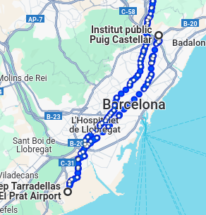

Primero de todo fui en metro al aereopuerto Josep Tarradellas
Una vez ya estuve en francia hice 3 viajes por su capital, Paris.


-Latin Quarter -Catedral Notre-Dame -Louvre Museum
Me fui a versailles a pasar los siguientes 3 dias.


Excrusión a Estrasburgo!


Fui a Lyon para ver su hermoso rio!

Viaje a Marsella ultimo dia...

Vuelta a españa, volví a paris pillando el tren y de parís vamos al aeropuerto para volar a españa!
Mapa interactivo (2/2)